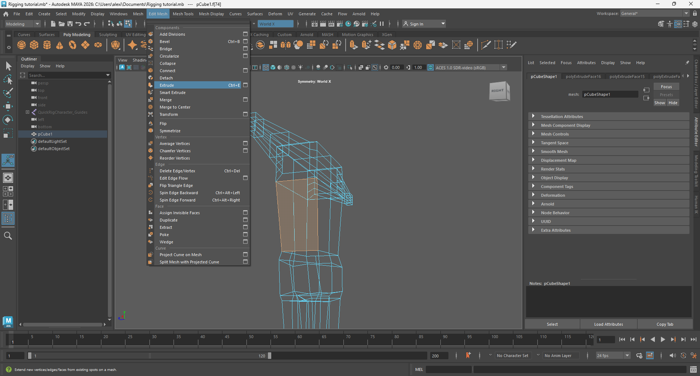
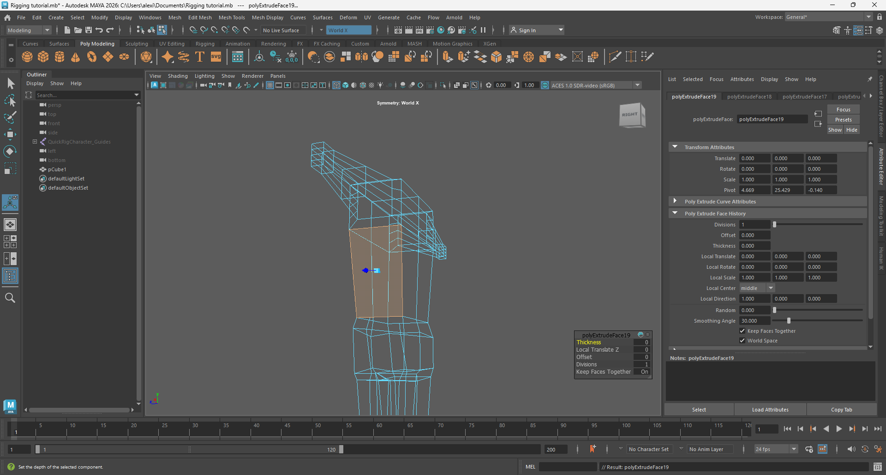
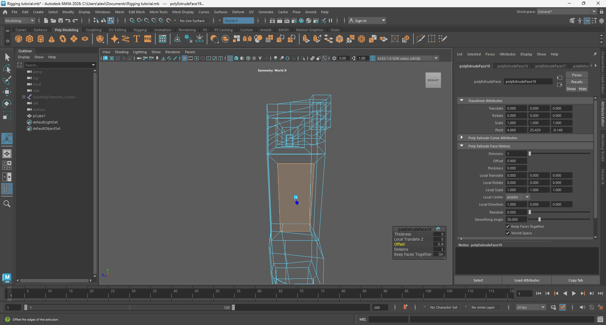
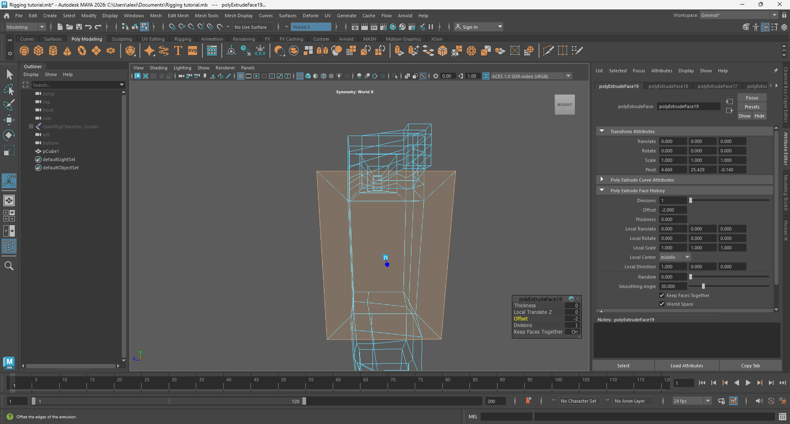

Maya doesn't have a dedicated tool to inset a face like in Blender, but it can be easily done with a different tool:
- Select a model's face to inset and select Edit Mesh->Extrude or press Ctrl + E.

- A tool option window will appear:

- Adjust the Offset option - make it positive to inset the face, or negative to outset the face.


And this is how you can inset a face in Maya.
Main page